01 / THE POSITION
不追逐大流通，只做经得起来源、合规与时间考验的连接。
JI SU HUAN YU TECHNOLOGY (HONG KONG) CO., LIMITED 是一家面向国际的精品文化贸易商行。我们以审慎的交易结构，处理珍稀物件、传统工艺与跨文化传播。
我们的判断不以规模为先，而以来源清晰、路径合规、关系可持续为边界。每一次配置、修复、传播或交付，都应当知道它从哪里来、为什么值得、将往何处去。
02 / PRIVATE CELLAR
澳洲精品酒窖顾问
只以配额商与私人酒窖对接，为少数私人客户配置限量酒款、稀有年份、大瓶装与酒庄直出配额。
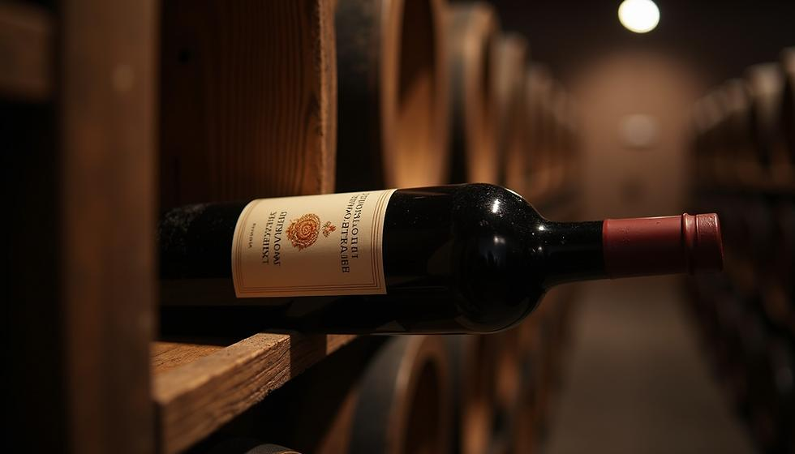
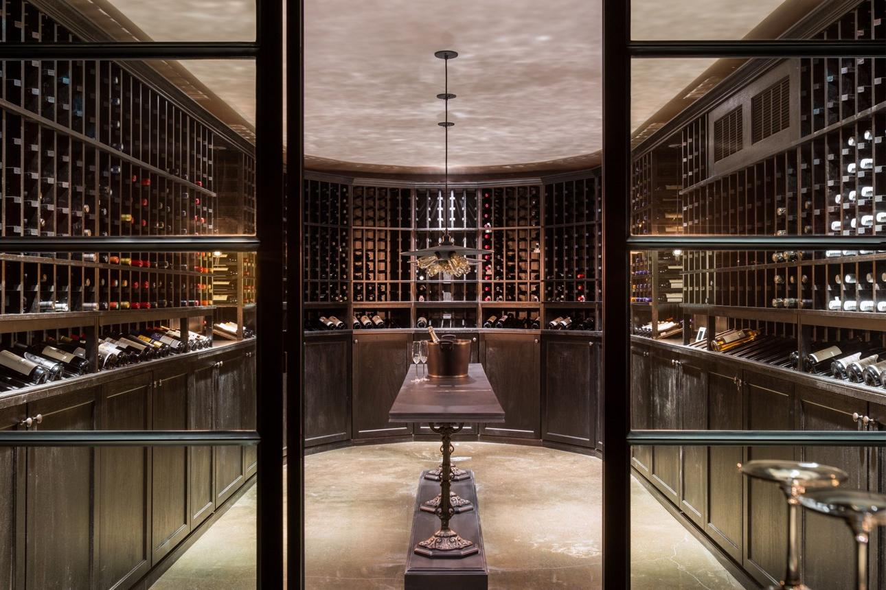
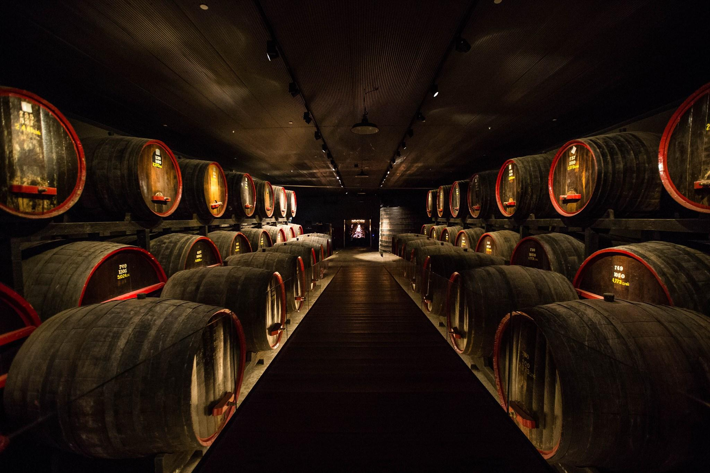
CELLAR / PATIENCE
真正的稀缺，不只是数量有限；更在于它被妥善保存、被清楚记录，并被交到理解它的人手中。
03 / HERITAGE WOODWORK
让一件家具，
成为可以传承的时间。
围绕传统榫卯、修复、可追溯与回收来源木料，连接合法木材、工艺师与收藏需求，为高净值人群及家族传承人提供长期收藏方案。
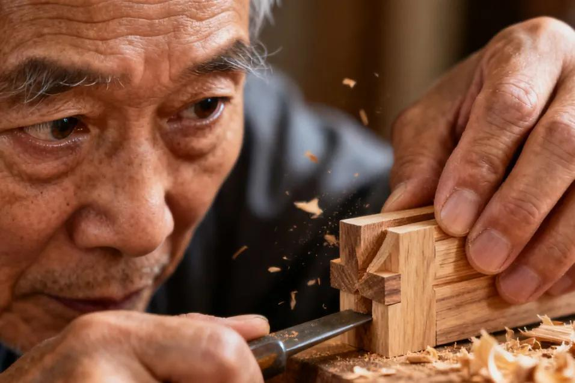
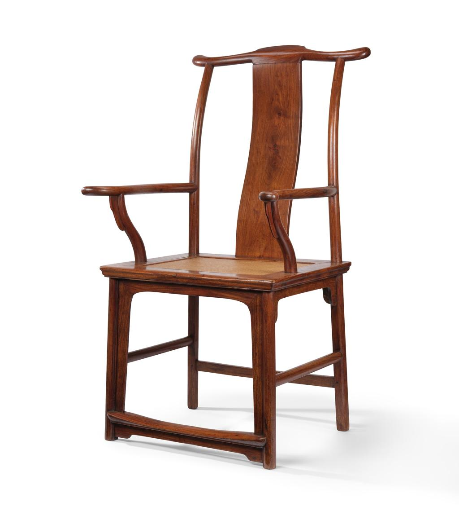
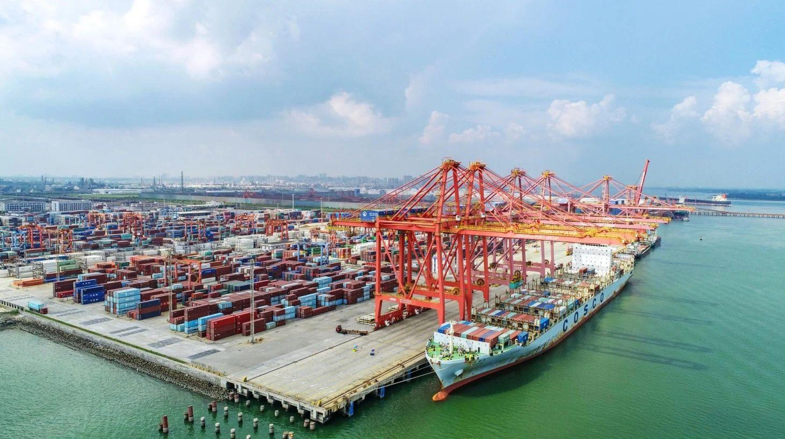
04 / CULTURAL ROUTE
把中国的文化气质，带到更远的地方。
依托深圳消费类产品、品牌供应链和跨境渠道能力，探索文化内容、消费品与欧美市场的结合。香港作为合同、结算、保险与国际合规协作平台，让通道可靠而可持续。
HONG KONG → SHENZHEN → ZHANJIANG → THE WORLD05 / BRUCE LEE CULTURAL PROJECT
把精神遗产带入
当代欧洲语境。
以文化传承与长期传播为方向，连接人物精神、当代内容、消费产品与海外受众。我们关心的不只是一个被反复使用的符号，更是跨越语言与年代、仍能被理解的东方力量。
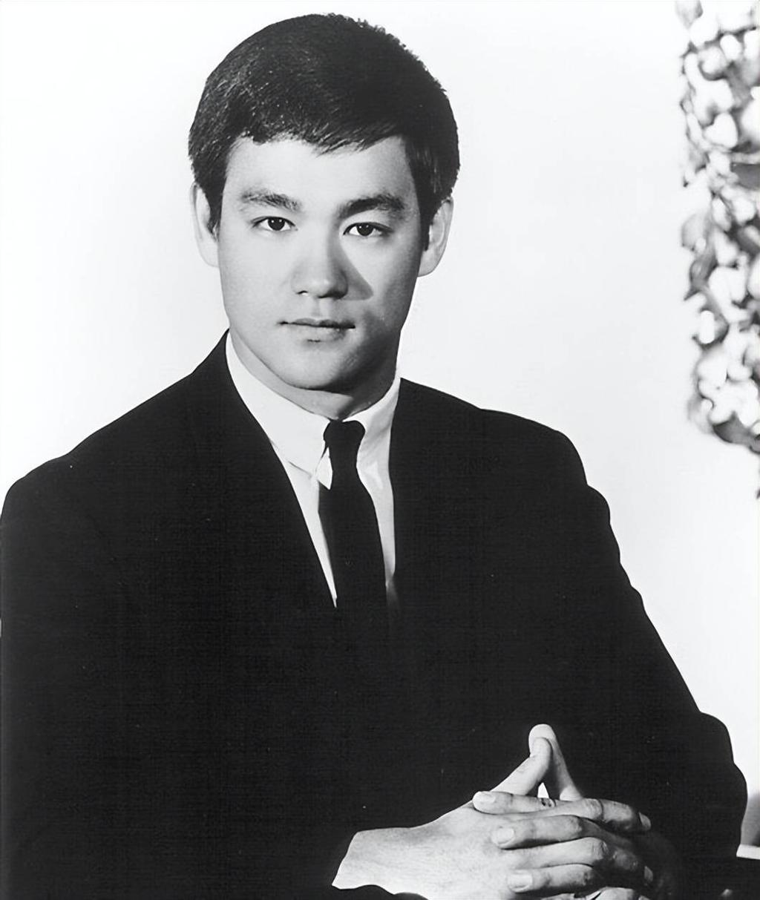
IN PROGRESS / CULTURAL DIRECTION
从纪念走向理解，
从符号走向传播。
项目依托深圳的消费产品、品牌供应链与跨境渠道能力，探索内容、展览、文化产品与欧洲市场之间的长期连接。
当前处于项目方向与资源搭建阶段；每一项对外合作与相关产品，均以获得权利方授权及实际协议为前提。
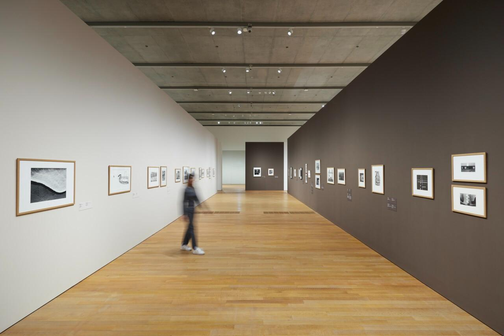
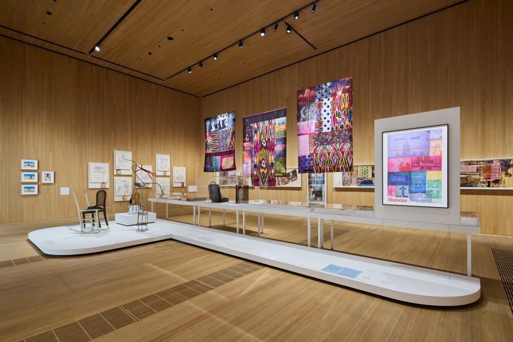
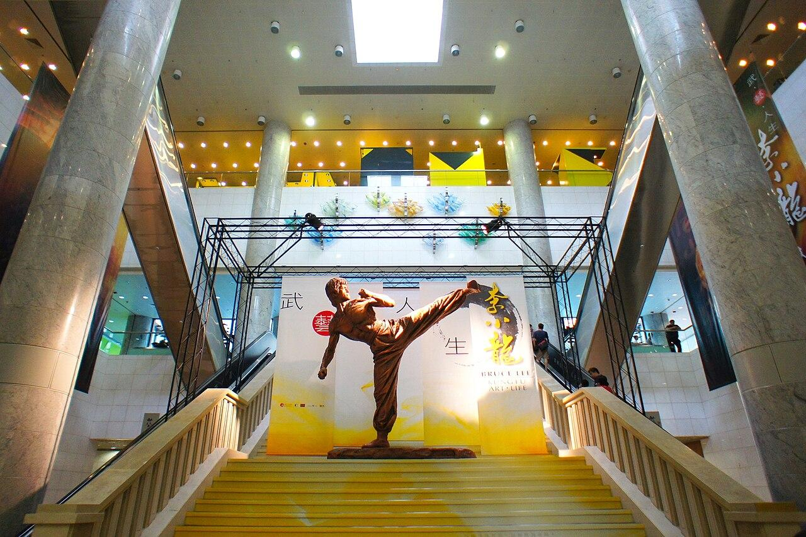
本页面用于呈现推进中的文化传播方向；人物姓名、肖像及相关知识产权归各权利人所有，不构成官方授权、发行或合作公告。实际开发、传播和商业化须以权利方书面授权与正式合同为准。
06 / THE THREE ANCHORS
三座城市，一条通道
不同的城市承担不同的工作：国际平台、品牌与客户连接、港口与工艺协作。它们共同构成商行的现实基础。
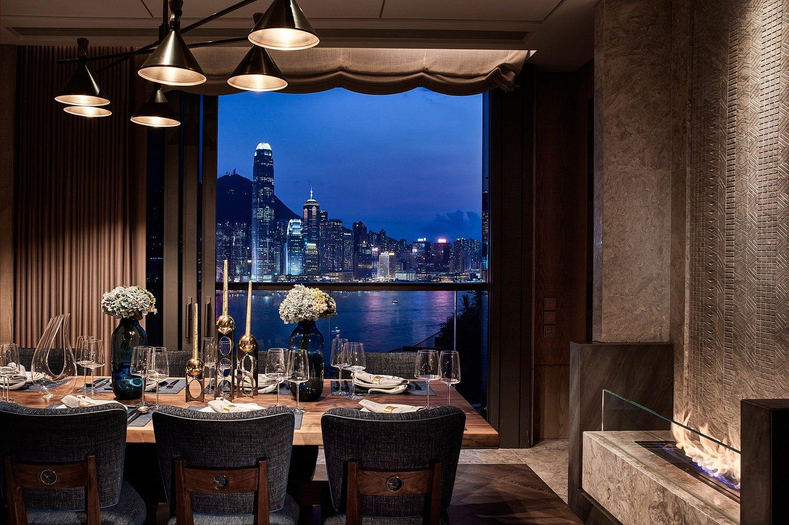
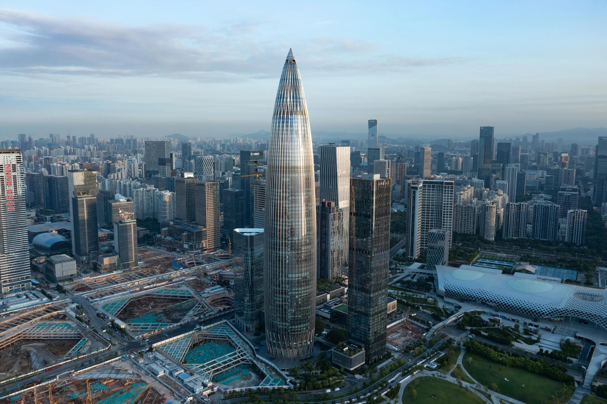
VISUAL ARCHIVE / SELECTED DETAILS
来源、材料、风土、城市与手艺。
07 / THE PRINCIPAL
朱强 · JADEN
常驻深圳与湛江，香港文化商行主理人。以老派商人的耐心处理当代的跨文化生意：看得远一点，走得慢一点，把关系做得久一点。
- 文化科技香港商行主理人
- 中外文化通道搭建者
- 根植中国、面向世界的长期主义者
- 李小龙文化产品欧洲传播项目 · 推进中